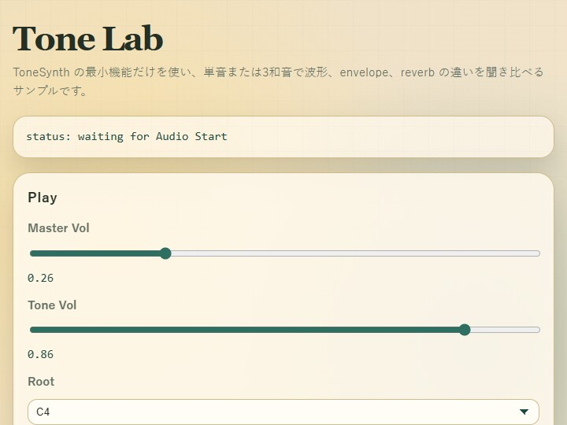

tone
English | 日本語

Overview
- This sample uses only
ToneSynthto inspect differences in waveform, envelope, and reverb with either a single note or a triad - Instead of going through the SE catalog / BGM features of
AudioSynthorGameAudioSynth, it directly manipulates the minimal audio parameters accepted byToneSynth.playTone() - You can switch between the
sine,triangle,square, andsawtoothwaveforms, thepercussion,brass,woodwind,organ,piano, andguitarenvelope profiles, and theroom,hall, andplatereverb impulses from the same screen
Reading the Screen
The screen is divided into Play, Envelope, Reverb, and What To Listen For. Start by pressing Audio Start to start the AudioContext, then choose root, wave, mode, and gain in Play. In Envelope, adjust the attack and decay shape of the sound. In Reverb, adjust the amount of reverberation and the type of acoustic space.
Hold Single plays only the current root while the button is held down. Hold Triad plays root, 3rd, and 5th together while the button is held down. When the button is released, the sound stops according to the release of the selected envelope. When Mode is minor, it plays a minor triad; otherwise it plays a major triad, so you can compare how the same waveform and envelope sound different as a single note and as a chord.
How to Run
- Open ./tone.html
- Use a browser with WebGPU support, and check the help panel and HUD together with the sample when needed
webg Features Used
ToneSynth: handles single-note playback, stopping, envelope presets, reverb impulses, and volume adjustmentToneSynth.playTone(): plays one voice by specifying frequency, wave type, profile, gain, and pan. By settingdurationtonull, the voice sustains until the button is releasedToneSynth.setSeEnvelopePreset(): updates the currently selected envelope profile from the slider valuesToneSynth.setSeReverb()andToneSynth.setSeReverbImpulse(): switch both the amount of reverb and the character of the impulse response
Checkpoints
First, press Audio Start and confirm that a single note sounds only while Hold Single is pressed, then stops with the release phase when the button is released. Next, switch Wave from sine to triangle, square, and sawtooth and confirm that even with the same envelope, the brightness and hardness change according to harmonic content.
When you switch the Envelope profile, the time behavior changes even with the same root and waveform. percussion is a short struck sound with almost no sustain, organ continues almost steadily, piano and guitar decay quickly even if held, and brass and woodwind rise more slowly and are easy to compare as sounds with sustained breath-like behavior. When you move Attack, Decay, Sustain, and Release, the changes apply from the next note triggered with the selected profile.
In Reverb, switch between Dry, Room, Hall, and Plate and confirm how reverberation changes the outline of the sound. With short envelopes, the reverb tail becomes especially noticeable; with long envelopes, the way the dry signal and reverb overlap changes.
When you press Hold Triad, it becomes easier to hear reverb smear and the density of harmonics in square / sawtooth, which can be hard to judge with a single note. In chords, the voices are also given slightly different pan positions, so the left-right spread can be heard as well.
Controls
Audio Start: starts theAudioContextHold Single: plays the root as a single note only while pressedHold Triad: plays a major or minor triad only while pressedStop All: stops all currently sounding tones with a short releaseRoot: selects the base noteWave: selects theOscillatorNodewaveformMode: selects single note, major triad, or minor triadTone Gain: adjusts the voice gain passed toplayTone()Profile: selects the envelope presetAttack / Decay / Sustain / Release: adjusts the ADSR of the selected profileReverb Mix: adjusts the send and return amount to the convolver togetherKind / Length / Decay: adjusts the character, length, and falloff of the reverb impulseDry / Room / Hall / Plate: switches to representative reverb presets
Common Pitfalls
If you do not press Audio Start, no sound will play. This follows browser autoplay restrictions.
Tone Gain is the loudness baseline per voice. In a triad, several notes sound together, so the sample lowers each voice slightly to avoid too large a level difference from the single-note case.
If Reverb Mix is high and Release is long, the direct sound and reverberation overlap and the outline becomes easier to blur. It is easier to hear the differences if you first inspect the envelope in Dry, then switch between Room, Hall, and Plate.